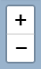
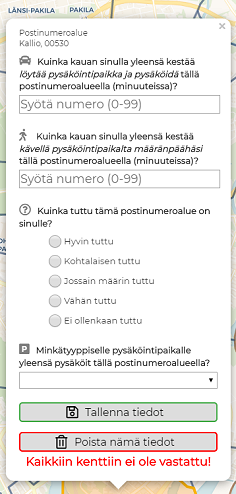

Tervetuloa kyselyyn!
Tämän kyselyn tarkoituksena on selvittää kuinka kauan henkilöauton pysäköinti kestää pääkaupunkiseudulla. Kyselyssä huomioidaan pysäköinnin koko prosessi: kuinka kauan pysäköintipaikkaa etsittiin, minne auto pysäköitiin ja missä oli vastaajan todellinen määränpää. Kyselyssä kerättyjä tietoja käytetään Helsingin yliopiston geoinformatiikan pro gradu -tutkimuksessa, josta voit lukea lisää allaolevasta "tarkempaa tietoa kyselystä" -kohdassa.
Tämä kysely tähtää vaivattomuuteen: Jos et muista pysäköinnin tarkkaa aikaa tai paikkaa, voit syöttää näistä arvion. Voit täyttää kyselyn vaikka jokaisen pääkaupunkiseudulla tapahtuneen henkilöautomatkasi päätteeksi, tai täyttää lomakkeen yhdeltä istumalta monta kertaa.
Pyydän mahdollisuuksien mukaan jatkamaan kyselyyn vastaamista 31.3.2019 asti.
Huom! Huomaathan, että kyselyssä ei kartoiteta kotipihapysäköintiä tai sellaista pysäköintiä, jossa vastaajalla on käytössä henkilökohtainen pysäköintipaikka.
Kiitän vastauksestasi,
terveisin, Sampo Vesanen
Kyselyyn liittyvissä asioissa ota minuun yhteyttä sähköpostitse: sampo.vesanen(at)helsinki.fi
More on the subject
Tämän kyselyn tarkoituksena on tutkia pysäköintiin kuluvan ajan alueellista vaihtelua pääkaupunkiseudulla. Kysely noudattaa Salosen ja Toivosen (2013) matka-aikojen mittaamiseen tarkoitettua ovelta ovelle -menetelmää, jonka osana pysäköimisprosessi on. Menetelmän mukaisesti tässä kyselyssä kysytään 1) kuinka kauan pysäköintipaikan löytymiseen kului aikaa pysäköinnin etsimisen aloittamisesta, 2) missä pysäköintipaikka sijaitsi sekä 3) missä oli matkan lopullinen määränpää. Kyselyn tulokset ovat perustana geoinformatiikka-aiheiselle pro gradu -tutkielmalleni, jonka työnimi on Parking of private cars and spatial accessibility in Greater Helsinki Area. Tuloksia käytetään parantamaan Helsingin yliopistossa toimivan Accessibility Research Groupin kehittämää Helsingin seudun matka-aikamatriisimallia (Toivonen et al. 2015). Tällä hetkellä ryhmä käyttää matka-aikamatriisissa karkeaa arviota pysäköintiin kuluvasta ajasta (Kalenoja & Häyrynen 2003). Pro gradu -tutkielmani hypoteesina on, että pysäköintiprosessin kesto vaihtelee pääkaupunkiseudun eri osissa, ja tästä tutkimuksesta saatavat tulokset mahdollistavat alueellisen vaihtelun tutkimisen ja visualisoinnin. Pääset tutustumaan Digital Geography Labin tutkimukseen täällä (avautuu uuteen ikkunaan).

Henkilötietosuojasta: Tässä kyselyssä sinulta kysytään pysäköintisi ja määränpääsi sijaintia. Tämä on mahdollisesti arkaluontoista tietoa, ja vakuutan, että vastauksista ei voi tunnistaa yksilöitä. Kyselyvastausten analysointivaiheessa vastaajien ilmoittamat geopisteet asetetaan YKR-aluejaon (Suomen ympäristökeskus 2018) mukaiseen ruudukkoon (250 metriä kertaa 250 metriä), joka poistaa lopullisesta, pro gradussa esitellystä aineistosta, tarkat sijaintitiedot. Tutkimuksessa ei olla kiinnostuneita 250x250 metriä tarkemmista sijainneista. Pääset tarkastelemaan tutkimusaluetta ja tutkimusruudukon tarkkuutta tästä (avautuu uuteen ikkunaan).
Kirjallisuus
- Kalenoja, H. & J.-P. Häyrynen (2003). Keskustan pysäköinti osana liikennejärjestelmää – Tampereen keskustan pysäköintitutkimus. Tutkimusraportti 51. Tampere University of Technology, Tampere.
- Salonen, M. & T. Toivonen (2013). Modelling travel time in urban networks: Comparable measures for private car and public transport. Journal of Transport Geography 31: 143–153.
- Toivonen, T., H. Tenkanen, V. Heikinheimo, T. Jaakkola, J. Järvi & M. Salonen (2015). Helsinki Region-Travel Time Matrix 2015. DOI: 10.13140/RG.2.1.1901.3201
- Toivonen, T., M. Salonen, H. Tenkanen, P. Saarsalmi, T. Jaakkola & J. Järvi (2014). Joukkoliikenteellä, autolla ja kävellen: Avoin saavutettavuusaineisto pääkaupunkiseudulla. Terra 126: 3, 127–136.
- YKR-aluejaot (2018). Suomen ympäristökeskus.
Lomakkeen täyttöohje
Kyselyn käyttöliittymä
Ruudun vasen yläkulma

Ruudun oikea yläkulma

Ruudun oikea alakulma
Tätä napsauttamalla tiedot lähtevät liikkeelle
Tekniset yksityiskohdat
- Jos törmäät ongelmiin täyttäessäsi lomaketta, tarkista verkkoselaimesi ajantasaisuus
- Lomake on koekäytetty seuraavilla selaimilla. Suosittelen käyttämään jotain seuraavista:
- Älypuhelimella: Chrome (ainakin versio 71)
- Pöytätietokoneella/kannettavalla: Chrome (ainakin versio 71), Firefox (versio 64), Edge (versio 42)
- Jos käytät älypuhelinta lomakkeen täyttämiseen ja ongelmasi eivät hälvene vaikka olet seurannut ylläolevia ohjeita, kokeile täyttää lomake pöytä- tai kannettavalla tietokoneella (vaihtoehtoisesti voit kokeilla puhelinta, jos tietokoneella lomake tuottaa ongelmia). Testieni mukaan tietokoneversio tästä lomakkeesta on käyttövarmempi kuin älypuhelimen.